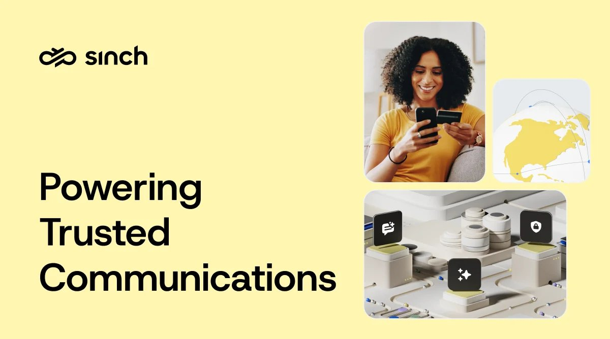
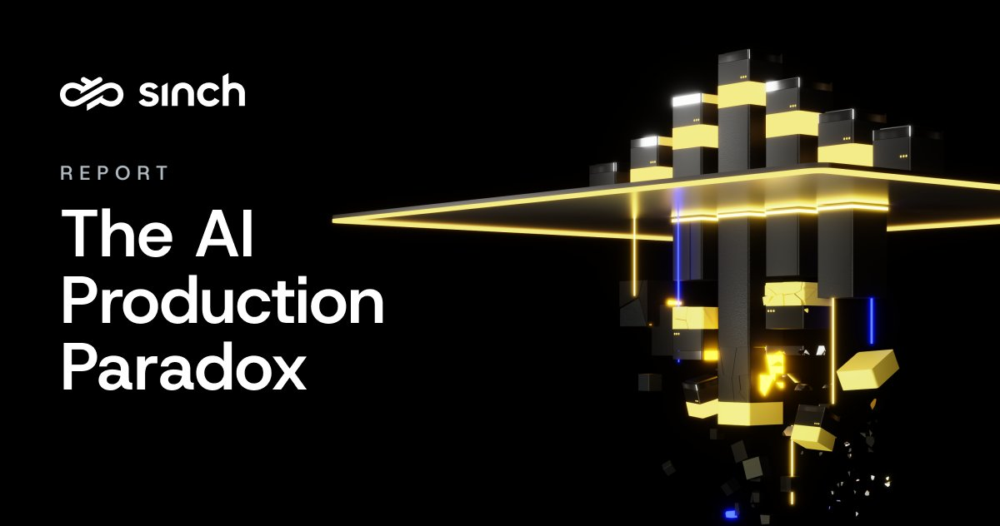
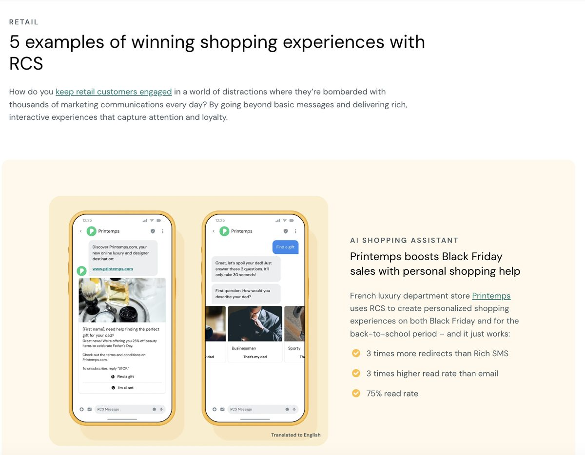
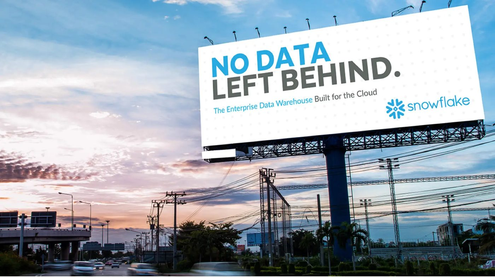
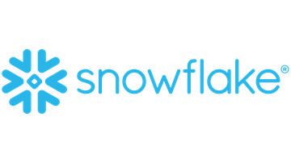
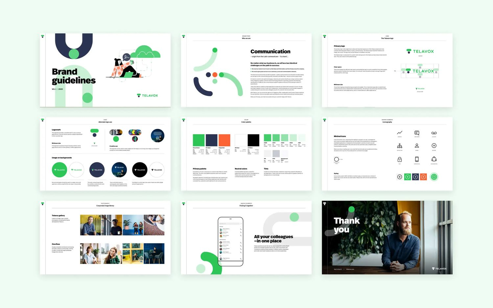
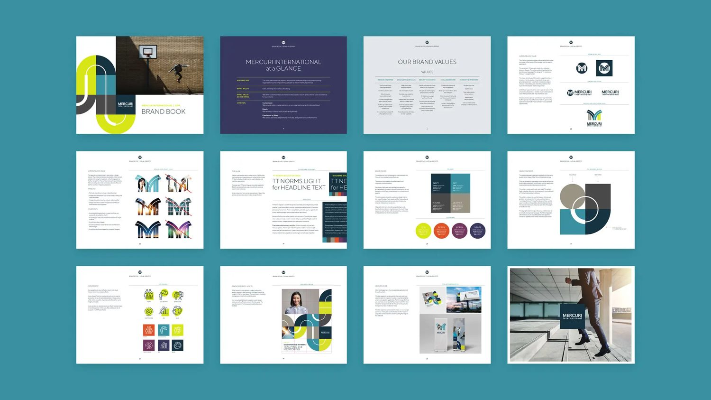
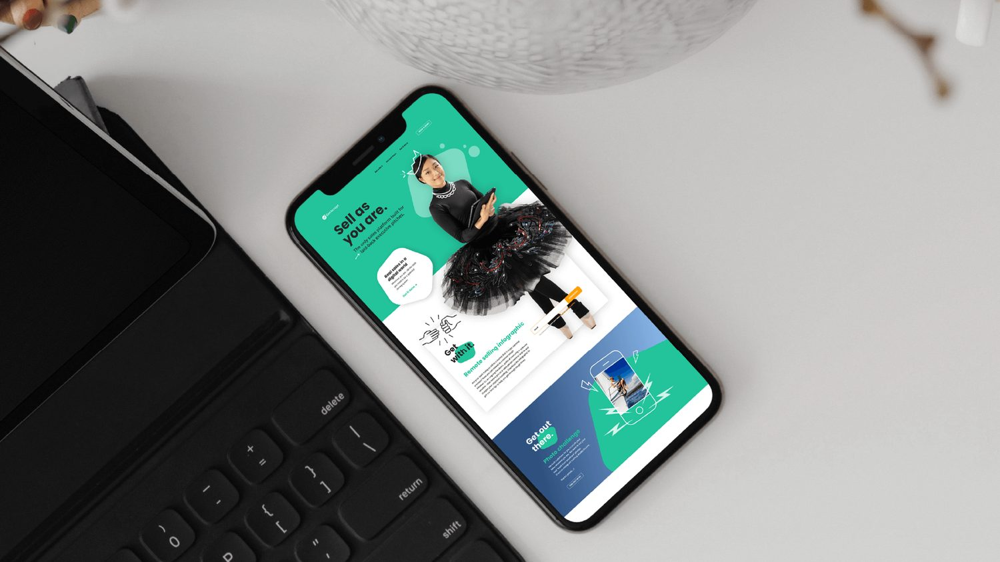
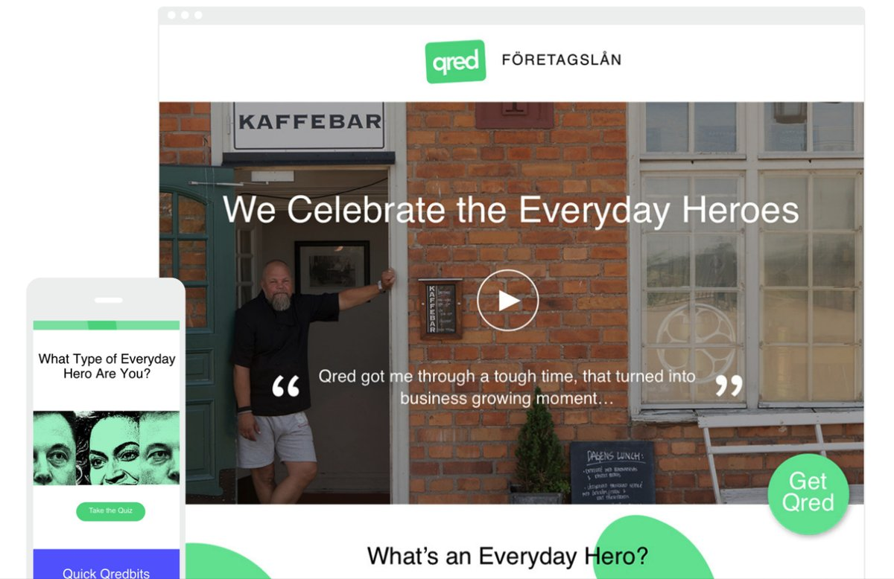
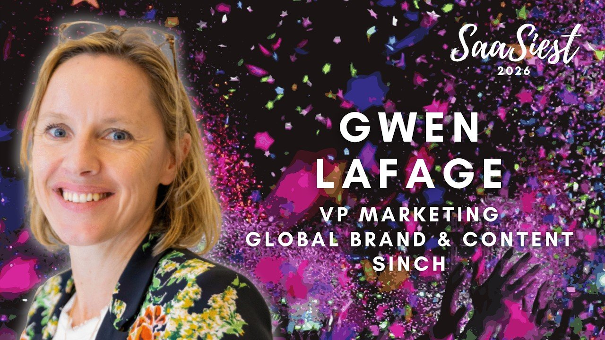

20+
years across advertising and B2B tech
Twenty years across advertising, an art gallery, Silicon Valley agency life and global B2B tech. Brand, GTM and demand, run as one discipline, driving brand preference and business growth.
Four acquisitions closed in six months. Each one arrived with its own brand, story and site. Multiple products, multiple names, one confused buyer.

Led the consolidation from vision and mission down to go-to-market messaging, then launched the global visual identity refresh and website that turned an acquired portfolio into one multi-product story.
The AI Production Paradox: one proprietary study, engineered to move from a single insight all the way to pipeline, not just press coverage.

Managed the PR agency relationship and partnered with analyst relations to carry the story from newsroom to funnel.
Brand and demand aren't separate departments in this model. They're one line of work, handed forward without losing the thread.

Full-funnel integrated campaigns, run with regional and demand teams, translated positioning into activation.
Identity, campaign and content work for Snowflake, Telavox, Mercuri, GetAccept and Qred, from scale-up to IPO, and agency to in-house.






B2B brands don't have to be boring. They have to win the battle for attention first.
Brand isn't a cost centre. It's what makes pipeline cheaper to build and easier to close.
The best positioning makes a complicated company feel simple.
Creativity isn't the opposite of strategy. It's often how strategy gets noticed.
In the AI era, brand matters more than ever. Brand is what drives AI visibility.
I'd rather build an organization than a hero campaign.
A team doesn't grow from 2 to 16 people across three continents just by adding headcount. It takes conscious organization, three people deliberately grown into directors, and an operating model that still works when you're not in the room.
Sinch is a global customer communications company in 60+ countries, with 4,000+ employees, 200K+ customers and USD 3B in 2025 net sales. At that scale, the org chart matters beyond campaigns.
I started in advertising in London and Paris, on some of the world's biggest consumer brands. In my late twenties I quit it, went a little bohemian, traveled around the world and opened an art gallery in San Francisco. I represented emerging photographers, ran an online gallery, and learned to sell without a sales team.
Curating a gallery and positioning a brand are the same job: deciding what matters and cutting the rest.
A few years later, I came back to marketing on the agency side, in Silicon Valley, working with B2B tech clients including Snowflake, from scale-up through its IPO. In 2017 I opened the European office for that same agency and grew it as GM Europe, from Stockholm. Then came Sinch: Sweden, Atlanta, and finally Nantes, about three hours from the village where I grew up.
Today I'm VP Marketing, Brand & Global Integrated Campaigns at Sinch. That means brand strategy, positioning, content, integrated campaigns, thought leadership, communications, events and creative direction, for one company, at global scale.
